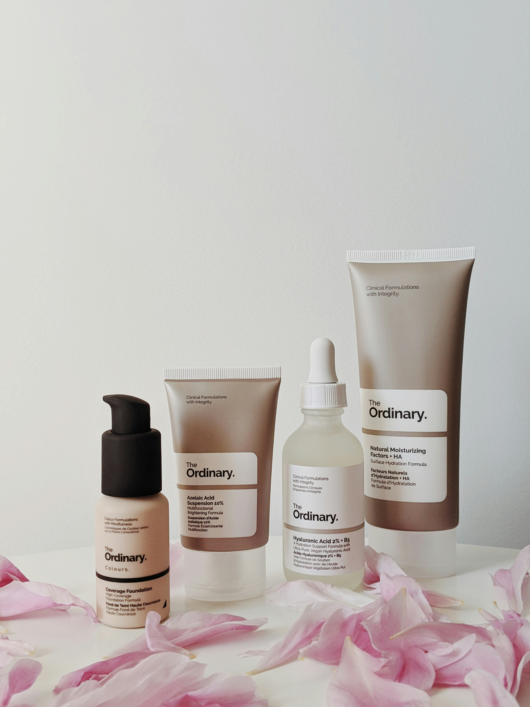

The Perfect Blend
Eye Mask Hidrogel: Mencerahkan dan Melembapkan dengan Ekstrak Semangka & Lidah Buaya.
Pelajari Lebih LanjutApa Itu Eye Mask Hidrogel?
Eye mask hidrogel adalah sediaan perawatan kulit area mata berbentuk gel elastis yang mengandung air dalam jumlah tinggi dan matriks polimer hidrofilik.
Hidrogel mampu melekat dengan baik pada kulit, memberikan sensasi dingin, serta menghantarkan bahan aktif secara lebih optimal ke lapisan kulit.
Keunggulan Utama
- **Daya hidrasi tinggi**, mencegah penguapan air.
- **Pelepasan bahan aktif secara bertahap**, efektivitas kerja lebih stabil.
- **Nyaman digunakan**, tidak mudah bergeser, dan sesuai untuk area kulit tipis.